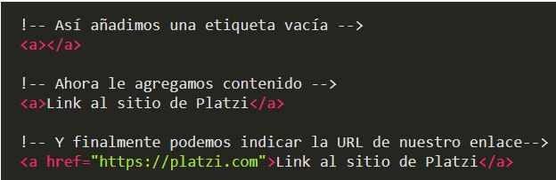

La etiquetas HTML se construyen de la siguiente forma:
• Etiqueta de apertura:
– Un signo de menor-que (<).
– El nombre de la etiqueta (por ejemplo, a) completamente en minúsculas.
– Un signo de mayor-que (>).
• Contenido de la etiqueta (por ejemplo, un texto como “Viva Platzi”).
• Etiqueta de cierre:
– Otro signo de menor-que y una barra inclinada ().
•
Una etiqueta por sí sola en realidad NO es muy útil, necesitamos atributos que definan el comportamiento de nuestras etiquetas. Por ejemplo, las etiquetas de imagen (img) necesitan un atributo (src) para indicar la URL de la imagen. Y una etiqueta a necesita el atributo href para indicar la URL del link que quieres agregar.
.

Estructura de los estilos CSS
Para agregar estilos a nuestras etiquetas HTML debemos seguir lo siguientes pasos:
• Escribir el nombre de la etiqueta que queremos estilizar (por ejemplo, a) seguido de una llave de apertura ({).
• Escribir el nombre de la propiedad que queremos modificar (por ejemplo, color) seguido de dos puntos (:).
• Escribir el nuevo valor o estilo que queremos darle a esa propiedad (por ejemplo, green) seguido de un punto y coma (;).
• Escribir una llave de cierre (}).
Hay muchas propiedades que podemos modificar: color, background-color, position, text-decoration, margin, padding, border, font-size, etc